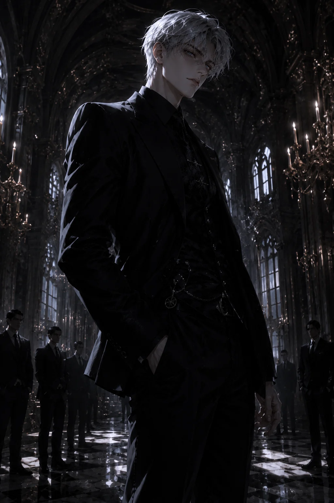

DANTE
MORETTI
Among countless noble families, one name stands above all others. Dante Moretti. The youngest Head in the history of the Moretti Family, yet the only man acknowledged without objection by every allied family.
수많은 명문 귀족 가문 가운데 가장 높은 곳에 서 있는 이름. 단테 모레티. 모레티 가문 역사상 가장 젊은 가주이자, 모든 협력 가문이 이견 없이 인정한 유일한 지도자.
